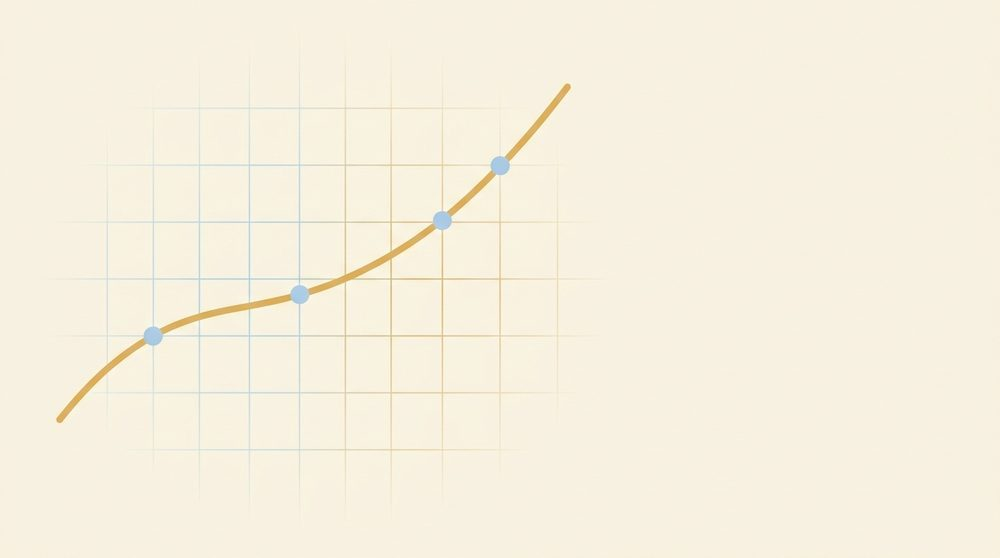

Your path through Algebra 1
A self-paced path through Algebra 1, written for an adult who knows arithmetic and is meeting the rest of it for the first time. Read the textbook, work with the tutor, and practice — in order, or jump to whatever you need.

Start here
This course is built to be read on your own, at whatever pace suits you. Open the textbook and start with Lesson 1.1, or jump to the topic you need — each lesson explains itself, with worked examples to study and practice to try. There's no clock and nothing to keep up with.
When you want a hand, ask Claude, your tutor. It has the whole book in front of it, so you can lean on it the way you'd lean on a patient person sitting beside you. Asking for help is part of how this works, not a sign you're behind.
How the tutor helps
The tutor teaches one-on-one. A few things it's good for:
- Working a problem with you, one line at a time, so you're doing the thinking instead of watching.
- Checking every answer before it calls anything right or wrong — and assuming you might be the one who's right.
- Explaining a different way when the first explanation doesn't land. A second picture often does it.
- Reading a photo of your handwritten work. Snap a picture of what you wrote on paper; the tutor reads your steps back to confirm, then shows you where a line went sideways, if one did.
- Giving you more practice when a skill is almost solid and you want a few more to lock it in.
Keeping your place: the Progress Card
Each conversation with the tutor starts fresh, so you carry your progress between sessions yourself. At a good stopping point, ask for a Progress Card — a short, readable note of where you are and what's next. Paste it back at the start of your next session and the tutor picks up right where you left off. Keep the Due for review line, too: it names a skill or two to mix back in, which is what keeps earlier work from fading.
Reference codes
Every worked example, practice problem, definition, and figure has a short code. A code reads as place-then-item: 12.5.w2 is worked example 2 in Lesson 12.5, 5.3.4 is practice problem 4 in Lesson 5.3, 1.2.f1 is a figure, and 1.1.d3 is a definition. You'll see them beside items in the textbook, where they double as deep links you can bookmark.
Their real use is pointing. Say "explain 12.5.w2" or "walk me through 5.3.4," and the tutor pulls that exact item up and works through it with you, re-checking the math as it goes. The tutor guide's extra problems use codes too, with a T in them, like 5.4.T1.
The roadmap
Twelve units and a statistics appendix, in a sensible order. Each card opens it in the textbook — start at the top, or jump to what you need.
- Unit 1 · Foundations & the Language of Algebra
Variables, the equals sign as a balance, the number system & number line, order of operations, negative numbers, expressions vs. equations - Unit 2 · Solving Linear Equations
One- and two-step equations, like terms, distributive property, variables on both sides, fractions in equations - Unit 3 · Proportional Reasoning (the bridge to linearity)
Ratios, rates, unit rate, proportions, percents - Unit 4 · Introducing Functions
What a function is, f(x) notation, domain & range, table/graph/equation/words - Unit 5 · Linear Functions & Their Graphs
Coordinate plane, graphing, slope, slope-intercept, writing equations of lines - Unit 6 · Modeling & Translation
Turning words into equations; number/age/distance/value & relationship problems; intro scatter plots - Unit 7 · Systems of Equations
Two equations, two unknowns: graphing, substitution, elimination, special cases - Unit 8 · Inequalities
One-variable, the sign-flip, compound, absolute value, two-variable graphing - Unit 9 · Sequences & Exponential Functions
Arithmetic/geometric sequences as functions, exponential growth & decay, linear vs. exponential - Unit 10 · Exponents & Polynomials
Exponent rules, scientific notation, polynomial operations, FOIL/area model - Unit 11 · Factoring
GCF, factoring trinomials, special patterns - Unit 12 · Quadratic Functions & Equations (the capstone)
Square roots & radicals, x²=9, factoring, completing the square, quadratic formula, parabolas - Appendix · Data & Statistics
One/two-variable statistics, line of best fit, correlation vs. causation, two-way tables